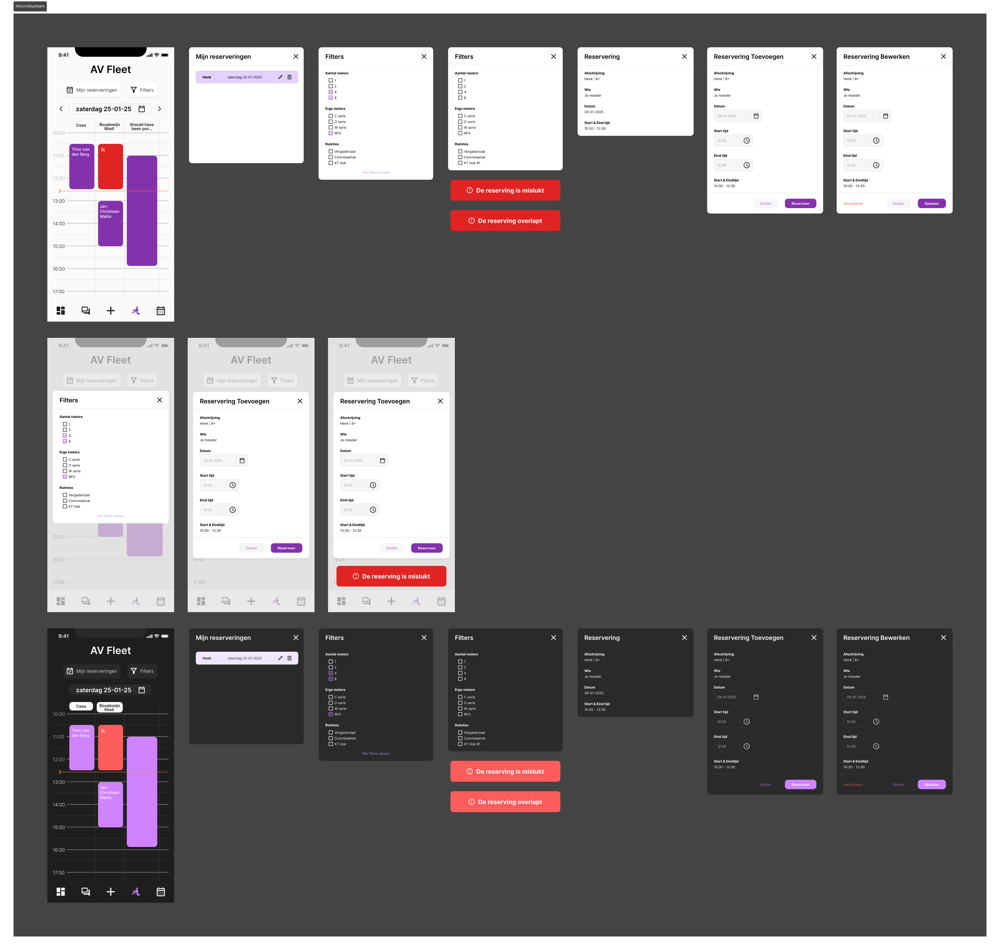
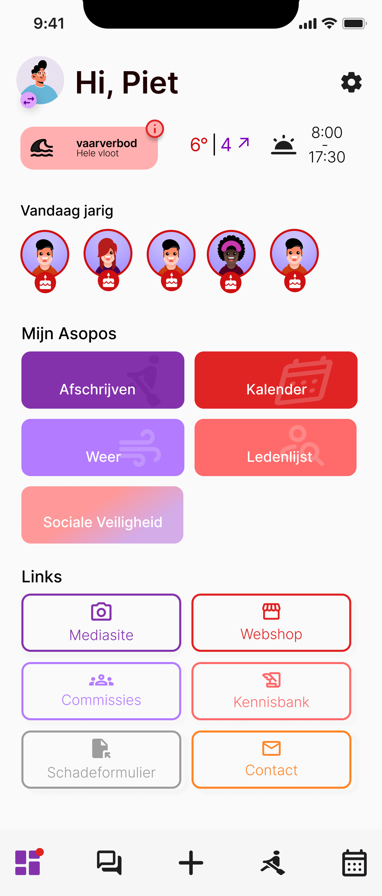
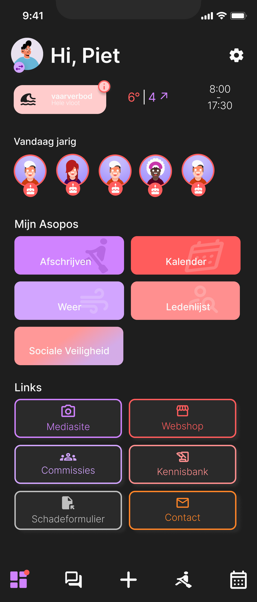
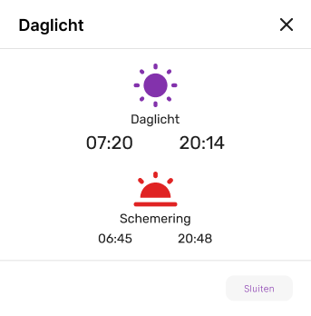
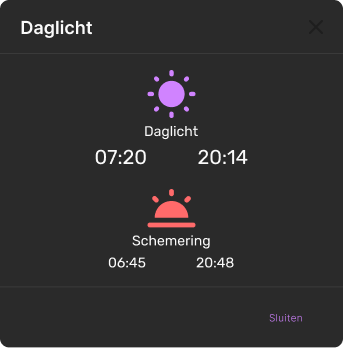
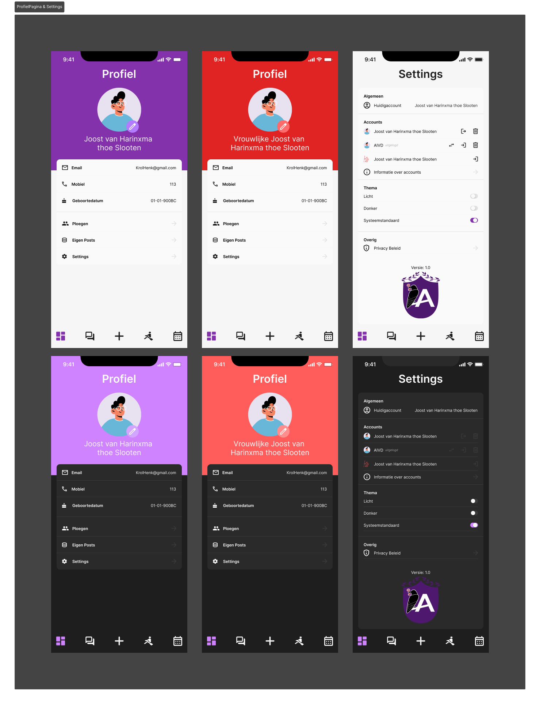
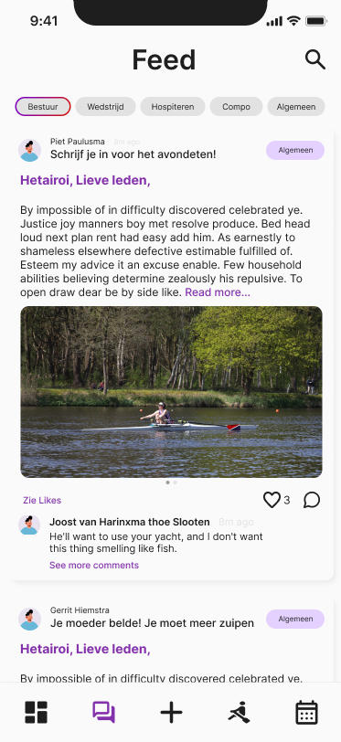
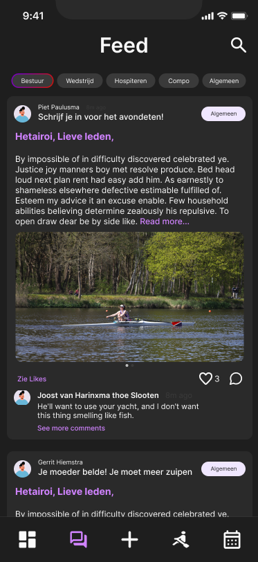

AIVD
AIVD commission at A.L.S.R.V. Asopos de Vliet
For the redesign and the development of the mobile application for Asopos de Vliet I led the UX/UI team. A.L.S.R.V. Asopos de Vliet is a student association based in the Netherlands. This project involved collaborating closely with a team of fellow UX designers and developers, as well as engaging with various stakeholders from the association to ensure the app met their specific needs and enhanced the user experience for all members. The application was developed using Dart and Flutter, showcasing my dual expertise in design and front-end development.
My Role
Under this page you can find some of the pages from the Design.







